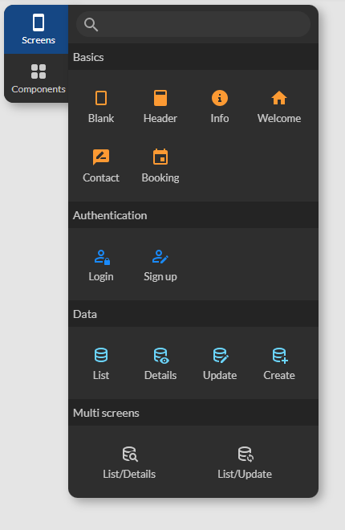
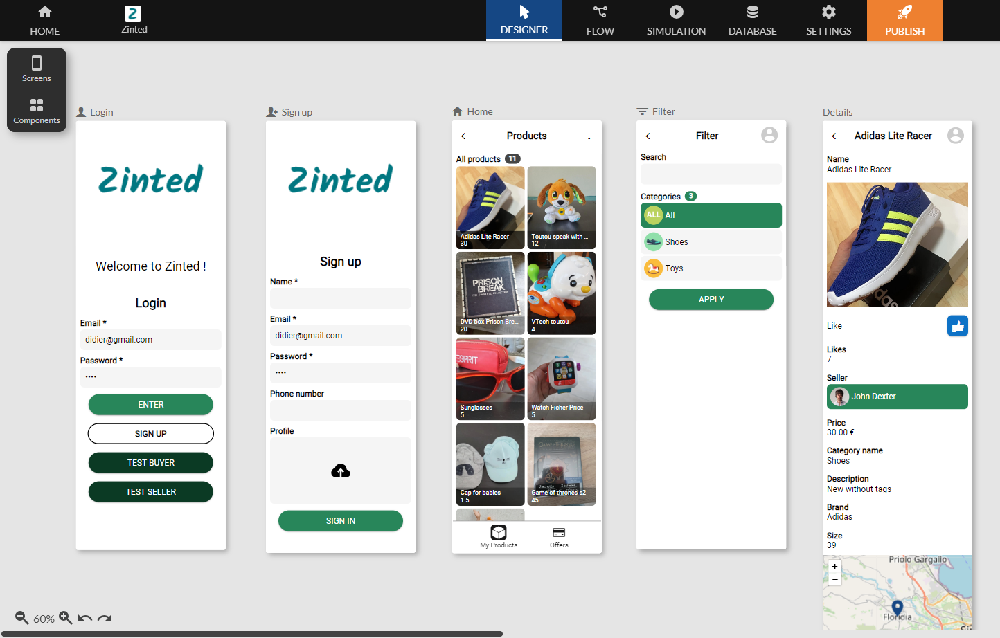
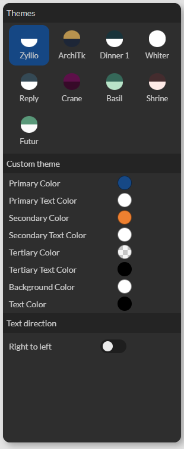

Documentation
Editeur d'écrans
L'éditeur d'écran offre une interface conviviale permettant aux utilisateurs de créer et de personnaliser des écrans pour leurs applications mobiles. Cette section présente brièvement les objectifs de l'outil et met en avant ses fonctionnalités principales.

Création d'écrans
La création d’écran est disponible depuis la barre d’outil ‘Screen’ qui affiche les modèles prédéfinis pour accélérer le processus de création.
| Modèle | Description |
|---|---|
| Blank | Crée un écran vide |
| Header | Crée un écran avec une barre de titre |
| Info | Crée un écran informatif avec quelques textes, une image et un bouton |
| Welcome | Crée un écran de bienvenue avec quelques textes, une image et un bouton |
| Contact | Crée un écran de contact avec boutons: Twitter, Website, Phone, Email, et YouTube Channel |
| Booking | Crée un écran qui contient un formulaire d'inscription |
| Login | Crée un écran d'authentification préconfiguré avec les champs Email et Password et un bouton d'authentification |
| Sign up | Crée un écran d’inscription utilisateur avec les champs Nom, email, mot de passe, image de profil et bouton d’inscription |
| List | Crée un écran qui affiche le contenu d’une table sous forme de liste grille |
| Details | Crée un écran qui affiche le détails d’une sélection, chaque champ de la sélection est affiché selon son type. Un composant Text pour le type text, un composant Phone pour le type phonenumber, un composant Map Marker pour le type location ... |
| Update | Crée un écran de type fomulaire qui permet de modifier chaque champ de la sélection. Un composant FormText pour le type text, un composant Switch pour le type boolean, un composant Choose option pour le type options ... |
| Create | Crée un écran de type formulaire qui permet de créer un enregistrement dans une table en fonction du type de chaque colonne. Un composant FormText pour le type text, un composant Switch pour le type boolean, un composant Choose option pour le type options ... |
| List/Details | Crée 2 écrans à la fois qui affichent le contenu d’une table et le détail de la sélection |
| Liste/Update | Crée 4 écrans à la fois qui affichent le contenu d’une table, le détail de la sélection, un formulaire de mise à jour et un formulaire de création |
Modification des écrans
Gestion de la zone de travail
Organisation spatiale des écrans
- Alignez les écrans de manière précise pour garantir une disposition efficace.
- Utilisez des outils d'agencement pour optimiser l'espace et améliorer la lisibilité.
Outils de manipulation
- Déplacez et redimensionnez les écrans avec des outils intuitifs.
Drag and drop des composants visuels
Ajout de composants dans les écrans
- Faites glisser et déposez des composants visuels à partir de la bibliothèque sur les écrans.
- Choisissez parmi une variété d'éléments tels que boutons, champs de texte, images, listes, ...
Configuration des composants
- Personnalisez les propriétés de chaque composant en fonction de vos besoins.
- Ajustez les paramètres tels que la couleur, la taille et le comportement interactif.
Sélection, copie, et collage
Sélection d'écrans et de composants
- Apprenez différentes méthodes pour sélectionner efficacement les écrans et composants.
- Utilisez des raccourcis pour accélérer le processus de sélection : CTRL+A pour sélectionner tous les écrans.
Copier-coller
- Dupliquez rapidement des écrans et des composants pour gagner du temps.
- Copiez des éléments d'un écran à un autre.

Définition du thème de l'application
Personnalisation de l'apparence
- Choisissez des couleurs et d'autres éléments graphiques pour définir le thème.
- Aperçu en temps réel des changements pour une visualisation instantanée.

Couleurs
| Nom | Description |
|---|---|
| Primary Color | Couleur principale utilisée pour le fond de la barre de titre (header) |
| Primary Text Color | Couleur principale utilisée pour le texte de la barre de titre (header) |
| Secondary Color | Couleur secondaire utilisée pour le fond des sélections d’item de listes et boutons |
| Secondary Text Color | Couleur secondaire utilisée pour le texte des sélections d’item de listes et boutons |
| Tertiary Color | Couleur ternaire utilisée pour le fond des zones de saisies. Elle est souvent semi-transparente |
| Terciary Text Color | Couleur ternaire utilisée pour le texte des zones de saisies. |
| Background Color | Couleur par défaut utilisée pour le fond des écrans |
| Text Color | Couleur par défaut utilisée pour les textes des composants |
Propriétés
| Nom | Description |
|---|---|
| Right to left | Bascule l’affichage des textes de droite vers la gauche, utile pour certaines langues (Arabe par exemple) |
Application du thème
- Appliquez facilement le thème défini à l'ensemble de l'application.
- Possibilité de changer de thème à tout moment en fonction des préférences.